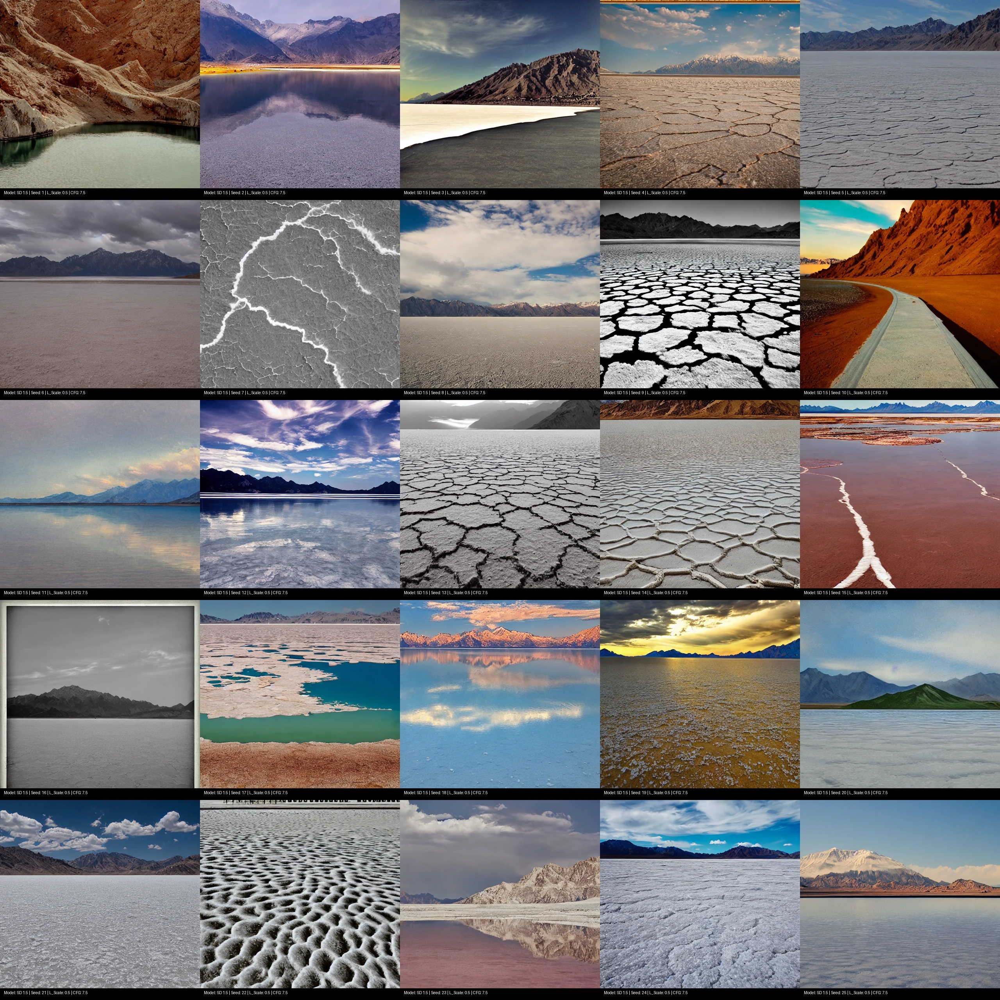
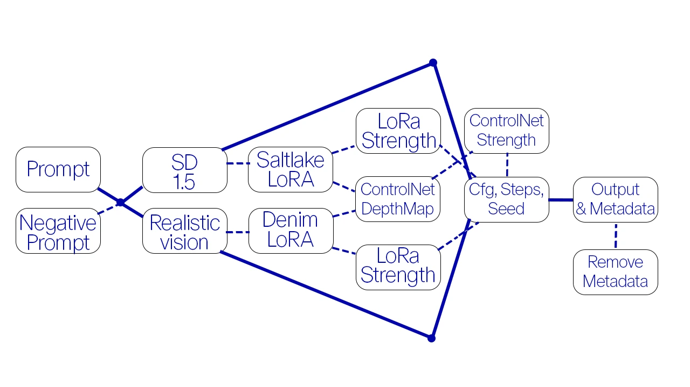
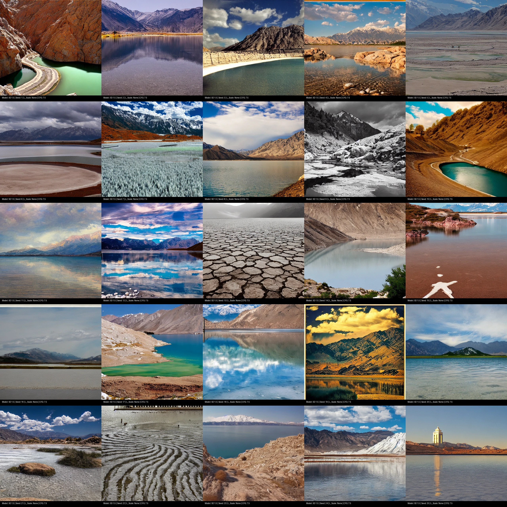
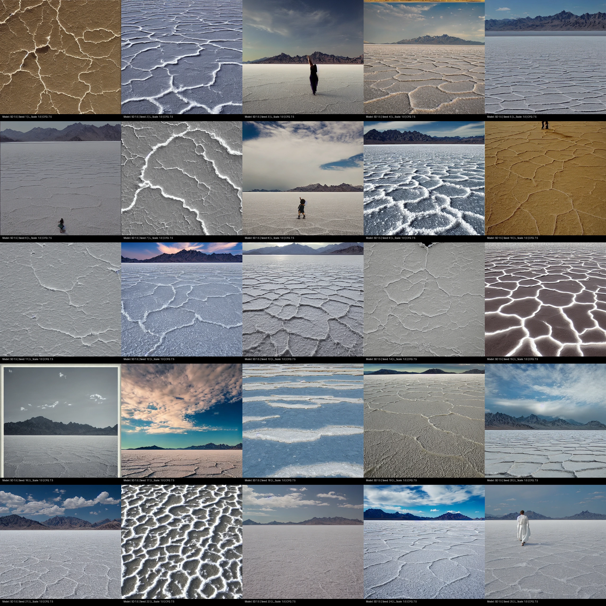

AI Image generation is available for every one that owns a smartphone or a computer. Results often feel completely random even though they can be controlled by certain Settings like Steps in the Denoising process, classifier guidance scale and Seed. Additional options like Low Rand Adaptation Models or ControlNets give the user more control over the output.

Figure 1: Main teaser image demonstrating generations produced using a 0.5 LoRA strength configuration.
As described image generation via Diffusion Models often seem random and without control. This Impresssion is being approached with this Web App. The Goal is to give the user an understanding and a certain feeling of control over the output.
The code for this Web App was generated using Gemini AI. This Image showing the structure works with striped lines that stand for an optional Step in the Generation Workflow. First you can type in your prompt and optionaly your negative prompt. Then you as the user are given the option to choose between Realistic Vision and SD 1.5 Model. After this step ou can either jump staright to generation by setting seed, cfg and steps (or use default values) or you can choos a LoRA or/and a ControlNet Upload and set its strength as impact on output. Finally the user can toggle Metadata on and off depending on preference

Figure 2: Technical diagram mapping out the pipeline or architecture of the proposed approach.
Next to a classic generation method using the model itself, an added self trained LoRa impacts the generation and makes more precise results possible. One of the two LoRas is the "Saltlake LoRa" that was trained with a Dataset of a Saltlake in Utah. In the Grid without LoRa no typical Saltlake features/attributes are visible and they become more evident once the LoRa is applied.


Figure 3: Side-by-side qualitative comparison examining the visual output under varying LoRA strengths at 30 denoising steps.
Using Diffusion Models for image generation can be controlled by various parameters. Low Rank Adaptation Models can expand the output variety of a Model. Still image generation reaches its boundaries when it comes to contrasting visual conscepts for example in the prompt used or uploaded Image for ControlNet. At this exact point the user may also find the most interesting results because the AI actually has to create something "new".
If you find this project or work useful, please cite it using the following format:
@article{voncastell2026project,
title={SD 1.5 and Realistic Vision: Experimenting with Cfg, Seed, Steps,LoRas and Controlnet},
author={von Castell, Felix},
journal={GitHub Pages Project Site},
year={2026}
}